| Scientific Name | Common Name | Classification | TaxonID | Gene Number |
|---|---|---|---|---|
| 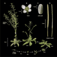 Arabidopsis thaliana | Mouse-ear cress | eudicotyledons | 3702 | 7112 |
| 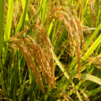 Oryza sativa | Rice | Liliopsida | 39947 | 4563 |
| Zea mays | Maize | Liliopsida | 4577 | 1187 |
| 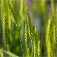 Triticum aestivum | Wheat | Liliopsida | 4565 | 881 |
| 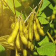 Glycine max | Soybean | eudicotyledons | 3847 | 452 |
| Solanum lycopersicum | Tomato | eudicotyledons | 4081 | 437 |
| 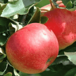 Malus domestica | Apple | eudicotyledons | 3750 | 356 |
| 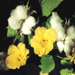 Gossypium hirsutum | Upland cotton | eudicotyledons | 3635 | 278 |
| 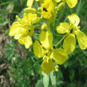 Brassica napus | Rape | eudicotyledons | 3708 | 172 |
| 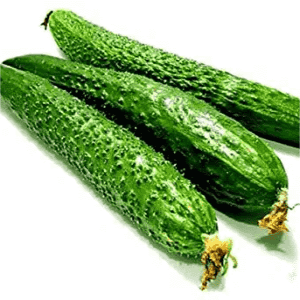 Cucumis sativus | Cucumber | eudicotyledons | 3659 | 109 |
 Vitis vinifera Vitis vinifera |
Grape | eudicotyledons | 29760 | 102 |
| 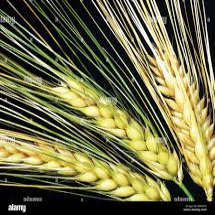 Hordeum vulgare | Barley | Liliopsida | 4513 | 81 |
| Camellia sinensis | Tea | eudicotyledons | 4442 | 72 |
| Chrysanthemum morifolium | Florist’s daisy | eudicotyledons | 41568 | 57 |
| 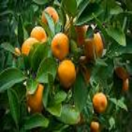 Citrus sinensis | Sweet orange | eudicotyledons | 2711 | 56 |
| 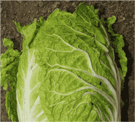 Brassica rapa | Turnip | eudicotyledons | 51350 | 41 |
| 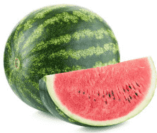 Citrullus lanatus | Watermelon | eudicotyledons | 3654 | 23 |
| Manihot esculenta | Cassava | eudicotyledons | 3983 | 26 |
| 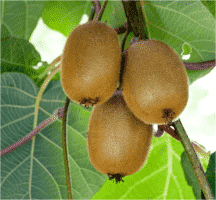 Actinidia chinensis | Kiwi | eudicotyledons | 3625 | 12 |
| 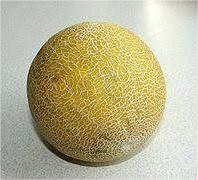 Cucumis melo | Muskmelon | eudicotyledons | 3656 | 14 |
| 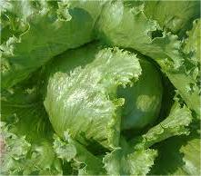 Lactuca sativa | Garden lettuce | eudicotyledons | 4236 | 7 |
 Medicago sativa Medicago sativa |
Alfalfa | eudicotyledons | 36902 | 8 |
 Medicago truncatula Medicago truncatula |
Barrel medic | eudicotyledons | 3880 | 11 |
| 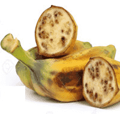 Musa acuminata | Banana | Liliopsida | 4641 | 6 |
 Panicum virgatum Panicum virgatum |
Blackwell switchgrass | Liliopsida | 38727 | 11 |
| 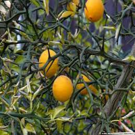 Poncirus trifoliata | Hardy orange | eudicotyledons | 37690 | 13 |
| 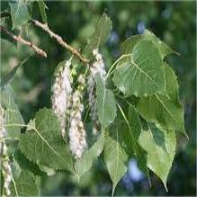 Populus deltoides | Eastern poplar | eudicotyledons | 3696 | 10 |
| 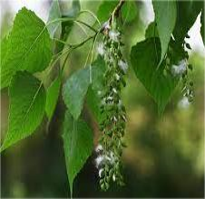 Populus tomentosa | Chinese white poplar | eudicotyledons | 118781 | 6 |
| 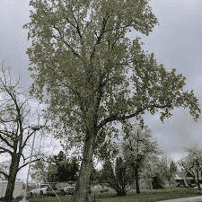 Populus trichocarpa | Western balsam poplar | eudicotyledons | 3694 | 12 |
| Prunus persica | Peach | eudicotyledons | 3760 | 14 |
| Fragaria ananassa | Strawberry | eudicotyledons | 3747 | 9 |
 Pyrus bretschneideri Pyrus bretschneideri |
Chinese white pear | eudicotyledons | 225117 | 8 |
| 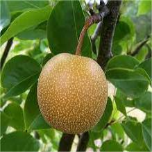 Pyrus pyrifolia | Chinese pear | eudicotyledons | 3767 | 11 |
| Rosa chinensis | China rose | eudicotyledons | 74649 | 6 |
| 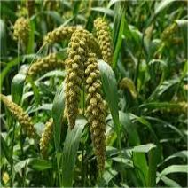 Setaria italica | Foxtail millet | Liliopsida | 4555 | 6 |
| 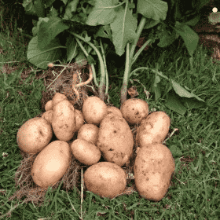 Solanum tuberosum | Potato | eudicotyledons | 4113 | 7 |
| 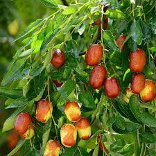 Ziziphus jujuba | Chinese jujube | eudicotyledons | 326968 | 12 |
| 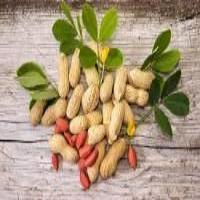 Arachis hypogaea | Peanut | eudicotyledons | 3818 | 6 |
| 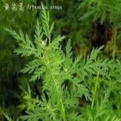 Artemisia annua | Sweet wormwood | eudicotyledons | 35608 | 5 |
| 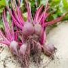 Beta vulgaris | Sugar beet | eudicotyledons | 161934 | 1 |
| 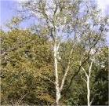 Betula platyphylla | Asian white birch | eudicotyledons | 78630 | 2 |
| 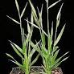 Brachypodium distachyon | Purple false brome | Liliopsida | 15368 | 3 |
| Brassica campestris | Field mustard | eudicotyledons | 3711 | 2 |
| 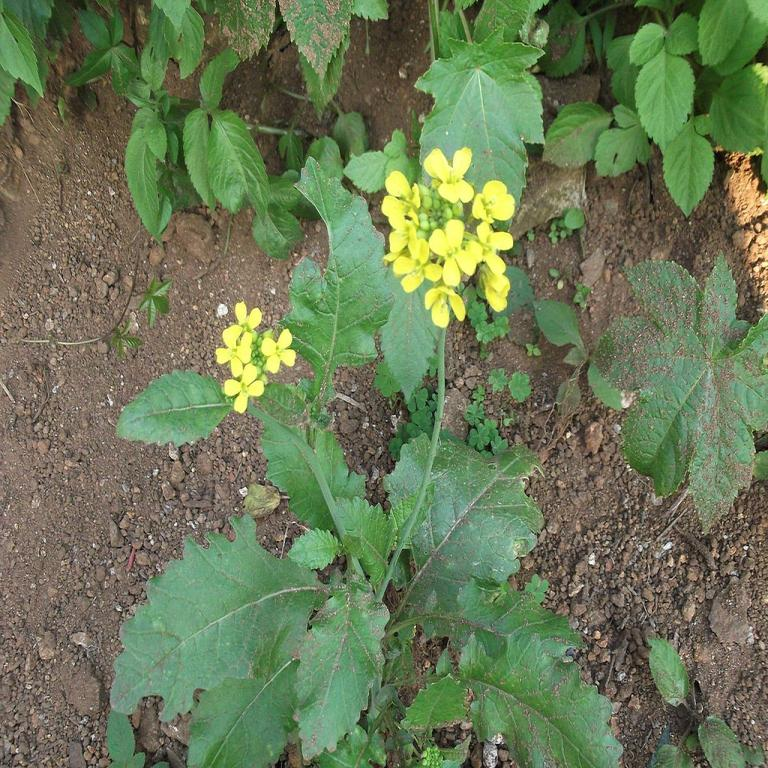Brassica juncea | Indian mustard | eudicotyledons | 3707 | 8 |
| Brassica oleracea | Cauliflower | eudicotyledons | 3715 | 6 |
| 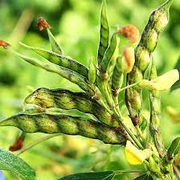 Cajanus cajan | Pigeon pea | eudicotyledons | 3821 | 3 |
| Cannabis Sativa | Hemp | eudicotyledons | 3483 | 3 |
| Capsicum annuum | Capsicum pepper | eudicotyledons | 4072 | 16 |
| 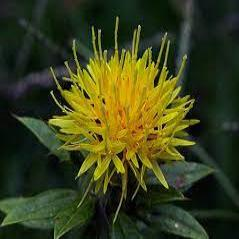 Carthamus tinctorius | Safflower | eudicotyledons | 4222 | 2 |
| 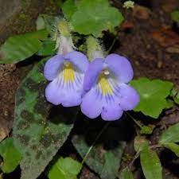 Chirita pumila | Dwarf Chirita | eudicotyledons | 405737 | 2 |
| 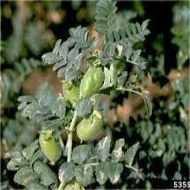 Cicer arietinum | Chickpea | eudicotyledons | 3827 | 4 |
| 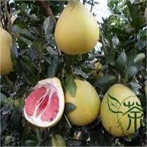 Citrus grandis | Grapefruit | eudicotyledons | 37656 | 2 |
| 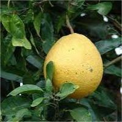 Citrus maxima | Pomelo | eudicotyledons | 37334 | 3 |
| Citrus reticulata | Tangerine | eudicotyledons | 85571 | 1 |
| 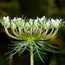 Daucus carota | Carrot | eudicotyledons | 79200 | 2 |
| 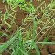 Echinochloa colona | Jungle Rice | Liliopsida | 90396 | 1 |
| 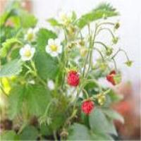 Fragaria vesca | Woodland strawberry | eudicotyledons | 57918 | 5 |
| 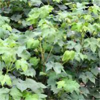 Gossypium arboreum | Tree cotton | eudicotyledons | 29729 | 3 |
| 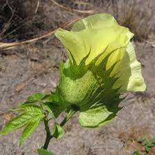 Gossypium barbadense | Sea-island cotton | eudicotyledons | 3634 | 2 |
| 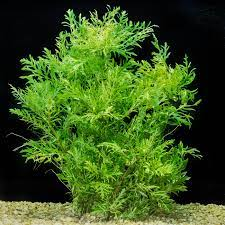 Hygrophila difformis | Water wisteria | eudicotyledons | 1279181 | 1 |
| 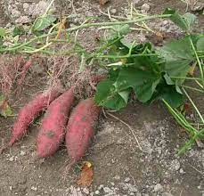 Ipomoea batatas | Sweet potato | eudicotyledons | 4120 | 6 |
 Juglans regia Juglans regia |
English walnut | eudicotyledons | 51240 | 1 |
| Lilium longiflorum | Trumpet lily | Liliopsida | 4690 | 6 |
| 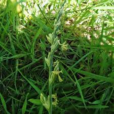 Lolium perenne | Perennial ryegrass | Liliopsida | 4522 | 1 |
| 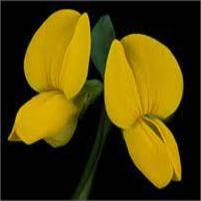 Lotus japonicus | Japanese lotus | eudicotyledons | 34305 | 2 |
| 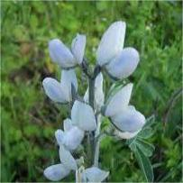 Lupinus albus | White lupine | eudicotyledons | 3870 | 1 |
| 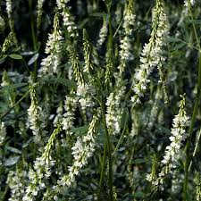 Melilotus albus | White sweet clover | eudicotyledons | 47082 | 2 |
| 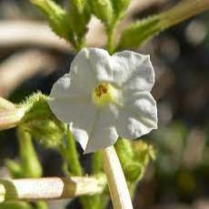 Nicotiana attenuata | Coyote tobacco | eudicotyledons | 49451 | 2 |
| 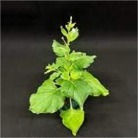 Nicotiana benthamiana | Benth benthamiana | eudicotyledons | 4100 | 3 |
 Nicotiana tabacum Nicotiana tabacum |
Common tobacco | eudicotyledons | 4097 | 46 |
| 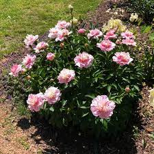 Paeonia lactiflora | Chinese peony | eudicotyledons | 35924 | 2 |
| Petunia inflata | Petunia | eudicotyledons | 2315833 | 2 |
| Phalaenopsis aphrodite | Moth orchid | eudicotyledons | 212056 | 2 |
| Populus ussuriensis | Ussurian Poplar | eudicotyledons | 696360 | 2 |
| Populus tremula | European aspen | eudicotyledons | 113636 | 5 |
| Prunus avium | Cherry | eudicotyledons | 42229 | 3 |
| Prunus mume | Japanese apricot | eudicotyledons | 102107 | 4 |
| Puccinellia tenuiflora | Alkali grass | eudicotyledons | 240906 | 3 |
| Punica granatum | Pomegranate | eudicotyledons | 22663 | 3 |
| Pyrus betulaefolia | Birchleaf pear | eudicotyledons | 436086 | 2 |
| Pyrus communis | Pear | eudicotyledons | 23211 | 5 |
| Raphanus raphanistrum | Wild radish | eudicotyledons | 109996 | 3 |
| Rehmannia chingii | Chinese foxglove | eudicotyledons | 332336 | 1 |
| Ricinus communis | Castor bean | eudicotyledons | 3988 | 2 |
| Rosa hybrida | Hybrid Tea Roses | eudicotyledons | 128735 | 3 |
| Saccharum spontaneum | Wild sugarcane | eudicotyledons | 62335 | 3 |
| Salix matsudana | Corkscrew Willow | eudicotyledons | 349989 | 2 |
| Salvia miltiorrhiza | Chinese sage | eudicotyledons | 226208 | 1 |
| Scutellaria baicalensis | Baical skullcap | eudicotyledons | 65409 | 2 |
| Secale cereale | Rye | eudicotyledons | 4550 | 2 |
| Senna tora | Sickle Senna | eudicotyledons | 362788 | 2 |
| Sesamum indicum | Oriental sesame | eudicotyledons | 4182 | 2 |
| Setaria viridis | Green bristlegrass | Liliopsida | 4556 | 1 |
| Solanum arcanum | wild tomato | eudicotyledons | 376710 | 2 |
| Solanum melongena | Eggplant | eudicotyledons | 4111 | 2 |
| Trifolium repens | Creeping white clover | eudicotyledons | 3899 | 1 |
| Vaccinium corymbosum | Highbush blueberry | eudicotyledons | 69266 | 1 |
| Vitis amurensis | Amur grape | eudicotyledons | 103351 | 2 |
| Zanthoxylum bungeanum | Sichuan Pepper | eudicotyledons | 328401 | 1 |
| Lolium rigidium | Annual ryegrass | Liliopsida | 89674 | 1 |